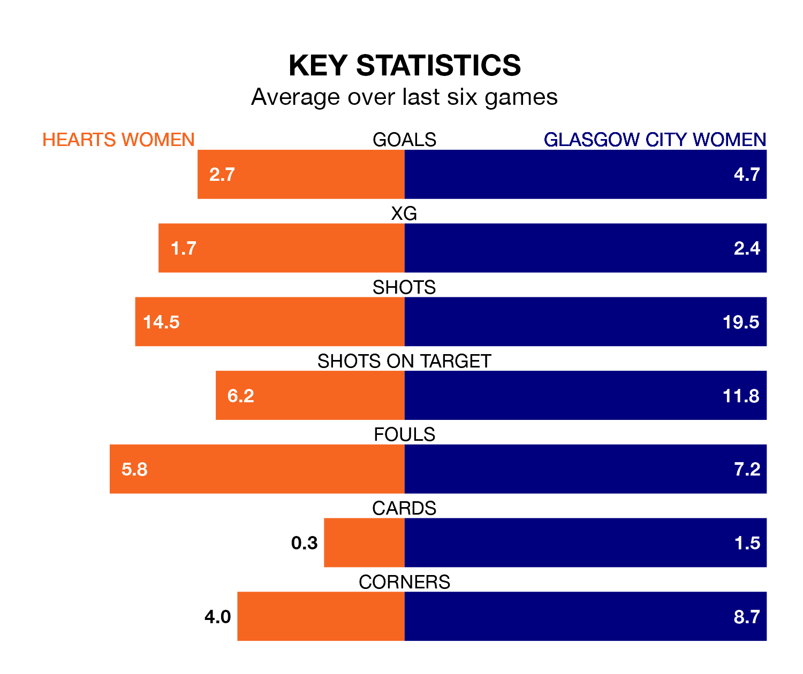

Two of SWPL 1's top sides face each other at Oriam National Performance Centre in Sunday's kick-off, when fourth-placed Hearts Women host third-placed Glasgow City Women.
Hearts have picked up 13 wins and three draws from 22 games so far this season, and sit 14 points below the visitors going into the 3pm match.
Glasgow City, meanwhile, have won 18 and drawn two, picking up 56 points.
Hearts are in fantastic form in SWPL 1, with five wins and one loss from their last six games.
But with six wins and no losses over that period, Glasgow City's form is even better – they have taken 18 points from 18, compared to the home team's 15.
With 72 goals in 22 games so far this season, the visitors are the league's third-highest scorers with 3.3 goals per game. And they are conceding fewer than average, letting in 13 goals at a rate of 0.6 per game.
Hearts are also above average scorers, with 2.6 goals per game, compared to a league average of 2.2. They have conceded 1.0 goal per game.
In the last 10 years, Hearts and Glasgow City have played each other on 12 occasions. Glasgow City won 11 of them and they drew once.
On average, Hearts scored 0.1 goals and Glasgow City 2.6 in those matches.
Their last meeting was on November 5, when they played out a 0-0 draw.
In Lee Alexander, Glasgow City can rely on one of the league's safest pair of hands. She has kept seven clean sheets in her 14 appearances this season, and only two other 'keepers – Rangers Women's Jenna Fife and Celtic Women's Kelsey Daugherty – have been able to prevent the opposition scoring on more occasions in SWPL 1.
In Hearts's net, Charlotte Parker-Smith has six clean sheets in 18 games. She has conceded a goal every 85 minutes, 60% more often than the 140 minutes between goals for Alexander.
Hearts's last match was on March 3, a 3-0 win against Dundee United Women, with Emma Brownlie (two) and Dannielle Collean McGinley getting the goals for Hearts.
Glasgow City beat Aberdeen 8-1 last time out, also on March 3, with Carlee Giammona (two), Meikayla Moore (two), Aleigh Gambone, Hayley Lauder, Lisa Forrest and Wilma Forsblom on the scoresheet.
Updated: 15:10 (UTC), 15/03/24